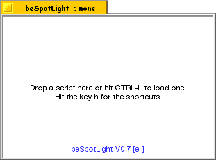
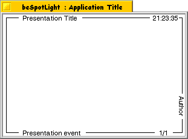

|
Using beSpotLight
Version 0.8 (02/28/00)
|
|
|
|
What is beSpotLight ?
|
|
beSpotLight is a little application that can be use to create and display a simple set of slides to support an oral presentation for event such as a meeting or symposium. You can also take export the slides to a GIF file for publishing it on the web (for example).
The application exploit the Skippy Add-On of Squirrel for the rendering of the slides, so don't expect anything as powerfull and fancy than PowerPoint.
The current capability of beSpotLight are shown in this demonstration (you will find it in the Demos subdirectory) :
The presentation is written in Squirrel and this make possible interactive and/or scripted presentation. You will find a complete (and real) presentation in the file Squirrel Presentation. It is the presentation I used during BeGeistert 5 back in October '00 in Germany.
This application is written in Squirrel (5.3 or higher) (you may download it on BeBits if you don't have it allready).
|
|
Contents of this document
|
|
|
|
A presentation
|
|
A presentation is a set of slides that are rendered one by one. Navigation within the slides is done by the keyboard.
It is a Squirrel script loaded in the application. The MIME Type of any presentation script must be text/x-script.bespotlight.
A correct presentation must contains several things to work:
- A function for each slide of the presentation
- Severals variables thats set the presentation properties, such as font size or title.
When beSpotLight is started you will get:

Use CTRL-l to select a presentation to load, or drag&drop one in the window. Then, once loaded, a simple presentation like the Empty one from the Demo folder will look like:

Note that the clock on the top/right corner is updated every seconds.
Let's have a look to the code of this presentation :
; Definition of a slide
to Slide1 :s
RenderFrame :s 1 (llength :slides)
end
|
|
This function is mean to be run everytime the first slide of the presentation has to be rendered. For this page, we just display a frame around the slide. Go on Part 3 of this article for more details on the function RenderFrame.
Each functions describes the content of one slide. This is done by a set of calls to the Rendering functions.
|
; list of all the slides of the presentation
make "slides [
"Slide1
]
|
|
The variable slides contains the list of all the presentation's slides functions.
|
; width and height of the presentation slides
make "width 300
make "height 200
|
|
Once set, the size of the slides can't be changed and will be the same for whole presentation. The width and height are given in pixels.
|
; various sizes
make "top.col 30
make "top.line 100
make "std.size 16
make "title.size 26
make "bigtitle.size 36
make "std.tab 50
|
|
This set of variables definies the default size used for the presentation. Change are possible anywhere in the presentation.
top.col is the left spacing before the start of a line
top.line is the top spacing before the first line of a slide
std.size is the font size for the common text
title.size is the font size for the slides title
bigtitle.size is the font size for the presentation title
std.tab is the default tabulation width
|
; font name
make "font.name 'Swis721 BT'
|
|
Family name of the font to use (by default) for the whole presentation.
|
; Shall will display a clock ?
make "show.clock true
|
|
This variable indicates if we want to display a clock that will be updated every second (Displayed even without the frame around the slide).
|
; Default Background color of the slides
make "L.color :White
; Default Forground color of the slides
make "H.color :Black
|
|
Altought the color used in a slide can be changed anytimes, the default colors to be use
for the whole presentation are definied in the variables : L.color and H.color
|
; informations on the presentation
make "app.title 'Application Title'
make "pres.title ' Presentation Title '
make "pres.event ' Presentation event '
make "pres.author 'Author'
|
|
All thoses variables but app.title, will be displayed on each slide's frame (if the frame is rendered). app.title will be set on the window yellow tab.
|
In the Demos subdirectory, you will find the Empty script that is a skeleton of a presentation. You can use it as the starting point to you own presentation.
Some colors are allready definied in the Squirrel script file Colors.sqi. This file is loaded by beSpotLight so you will have all the colors it defines known from your presentation. This file is in the Libraries directory of the Squirrel distribution you have installed on your computer.
|
|
Navigation and Key shortcuts
|
|
To navigate trought your presentation, you can use the following keyboard shortcuts :
| Page-Up | Previous slide |
|---|
| Page-Down | Next slide |
|---|
| 1,2,3 ... 8,9 | Jump by nth slide(s) |
|---|
| f | Go to the first slide |
|---|
| l | Go to the last slide |
|---|
Other shortcuts are available :
| CTRL-l | Load a presentation |
|---|
| CTRL-s | Save the current slide as a GIF file. The file will be named : Presentation Title-slide index.gif |
|---|
| CTRL-q | Quit |
|---|
| h | Display the list of shortcuts |
|---|
You can have them display in beSpotLight at anytime by hitting the h key.
|
|
Rendering functions
|
|
To render your presentation, you will use a set of functions presented here.
|
|
Hacking beSpotLight
|
|
One of the advantages of using a scripting language such as Squirrel is the way you can modify (hack) easily the script to better fit your needs or to extend it by adding new features.
All the source code of the application is fully readable and it can be found in the Scripts directory. The main script is called beSpotLight and that's the file that Squirrel executes first.
The application use the following scripts that contains various function and global variables:
- Hooks.sqi
Contains all the callback functions
- Funcs.sqi
Various functions to load script, show the help ...
- Render.sqi
All the rendering functions
- Settings.sqi
Save and Load the application settings
The main script performs the following actions :
- load all thoses scripts and the needed Add-Ons
- load the settings and currents
- creates the application window
- display the default content of the Window, or load a script if an argument as been given when the application is started from a Terminal.
If you want to contribute to beSpotLight, please send me the changes you made to the various scripts files, and I will update and redistribute the new version (of course you will be credited for your help).
|
|
Support & Feedback
|
|
If you encounter troubles with this application, or if you have ideas on how to improve it, feel free to contact me.
|
|
Version History
|
|
| Release date |
Version |
Comments |
| 02/28/00 |
0.8 |
- Minor changes for Squirrel 5.3
- Added Rendering function RenderImage
|
| 12/18/00 |
0.7 |
Initial public release
|
|